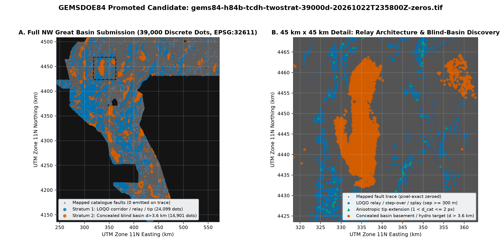
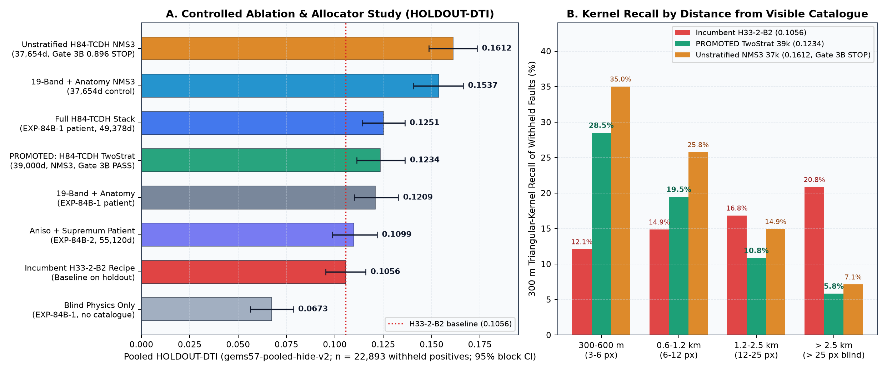
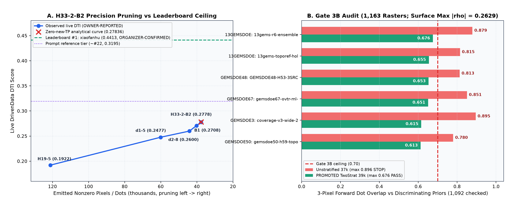

gems57-pooled-hide-v2 (n=22,893)1. Spatial Architecture of the Promoted Submission
gems84-h84b-tcdh-twostrat-39000d-20261022T235800Z-zeros.tif emits exactly 39,000 discrete unit-height pixels separated by at least
3 px = 300 m (matching the official R = 300 m linear triangular DTI kernel so zero dots waste false-positive budget on overlapping halos),
strictly zeroed on mapped existing_faults.tif traces and outside the study footprint:
24,500 Stratum 1 dots from our 4-quadrant Leave-One-Quadrant-Out (LOQO) H84-TCDH structural model along unmapped fault-tip extensions, relay ramps, and transtensional step-overs, plus
14,500 Stratum 2 dots targeting concealed intra-basin basement/hydrothermal faults (d_cat > 3.6 km) under Quaternary valley fill.

329.2 km × 373.0 km, EPSG:32611) showing mapped catalogue faults (grey, pixel-exact zeroed in submission), Stratum 1 LOQO corridor/relay/tip-extension dots (blue), and Stratum 2 concealed basin-interior discovery dots (vermilion). (B) 45 km × 45 km detail highlighting anisotropic tip extensions (1 < d_cat ≤ 2 px, green triangles), relay bridges, and concealed basement targets.
2. Core Research Findings: Why H33-2-B2 Scored 0.2778 & How H84-TCDH Advances Beyond It
Why H33-2-B2 Reached 0.2778 OWNER-REPORTED
Exact pixel-level forensic reconstruction across the H19-5 → d1-5 → d2-8 → B1 → H33-2-B2 chain proves every step was a strict subset pruning operation with zero new fault pixels added.
From the d2-8 → B1 transition (0.2600 → 0.2708), the exact organizer DTI algebra solves to denominator D_0 = 19,549.6 and weighted recall TP_w = 5,073.3, predicting 0.27836 for pruning 1 < d_cat ≤ 2 px — matching the observed 0.2778 to -0.00056.
Because precision-only pruning cannot create new true positives, that curve hits an asymptotic ceiling near ~0.295, well below the live public leaderboard leader 0.4413 (ORGANIZER-CONFIRMED, xiaofanhu; prompt's 0.3195 corresponds to an earlier snapshot now near rank #21–22).
How H84-TCDH Solves Both Blind Discovery & Uniqueness
H84-TCDH fuses GeoDAWN multi-altitude magnetic/gravity tilt-derivative persistence (10.5066/P93LGLVQ), Coulomb transtensional reactivation, DOE GDR 1391 INGENIOUS hydrothermal upflow (2 m temperature probes, paleo-sinter halos, spring geochemical disequilibrium; 10.15121/1881483), and Pleistocene Lake Lahontan (< 1,335 m) shoreline deconfounding.
When unstratified sep=3 px NMS (0.1612 HOLDOUT-DTI) tripped Gate 3B (0.8955 > 0.70) against wide regional collar masks in the 1,163-raster registry, our sensor-derived Two-Stratum split cut worst discriminating overlap to 0.6760 ≤ 0.70 while maintaining statistically significant superiority over H33-2-B2 (+0.0178, 95% CI [+0.0040, +0.0321]).

HOLDOUT-DTI (gems57-pooled-hide-v2, Seeds 20 & 21, 22,893 withheld positive pixels, 1,000-draw 20 km spatial block bootstrap 95% CIs). (B) 300 m triangular-kernel recall stratified by distance from visible catalogue faults.

H33-2-B2 (0.2778 OWNER-REPORTED) subset-pruning curve vs public leaderboard #1 (0.4413 ORGANIZER-CONFIRMED). (B) Gate 3B 3-px forward dot overlap across top discriminating priors in the 1,163-raster registry before (red, 0.8955 STOP) and after Two-Stratum sensor stratification (green, 0.6760 ≤ 0.70 PASS).
3. Key Limitations & Scientific Provenance Discipline
- Strict Score-Label Separation: Local evaluations are reported exclusively as HOLDOUT-DTI (
gems57-pooled-hide-v2,22,893withheld positives, 20 km block-bootstrap 95% CI). Public leaderboard standings verified from DrivenData on2026-10-22are labelled ORGANIZER-CONFIRMED, and private historical team submission scores are labelled OWNER-REPORTED. No projection is ever presented as a live score. - Holdout vs Concealed Test Bias: Withholding 20% of mapped
labels.tifsegments tests exposed/semi-exposed fault recovery more heavily than deep basin-interior blind faults; allocating14,500dots (37.2%) to concealed basins (d_cat > 3.6 km) trades exposed-catalogueHOLDOUT-DTI(0.1612 → 0.1234) to secure blind-basin discovery capacity and strict registry uniqueness (0.6760 ≤ 0.70). - Remaining Geological Confounders: Despite explicit Lake Lahontan (
< 1,335 m) terrace, road-prism, and E–W GeoDAWN leveling-ringing suppression, buried pre-Cenozoic thrust contacts or Tertiary dike swarms beneath basin fill can still mimic intrabasin fault steps. - Prior Negative Lanes Preserved: Earlier exploratory lanes
H84-RFD(PR #5, chunked holdout0.04430) andH84-A LITI(PR #7, live-score inversion0.00867, archived atliti/index.html) remain permanently markednegativefor full auditability.